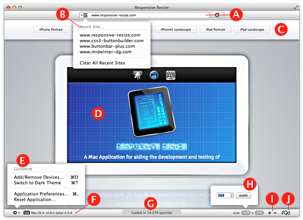

Responsive Resize
The Main Application Window
The Responsive Resize window consists of the following elements:

- A The URL Bar
- The URL bar is used for navigating to sites go to page…
- B The History Menu
- The History Menu contains recently visited sites go to page…
-
- C The Devices Bar
- Clicking of a button in the device bar changes the viewport to match that device go to page…
- D The Viewport
- The Viewport displays the currently active site in the proportions of the selected device.
- E The Customize Menu
- Contains various options for customizing the application go to page…
- F Current User Agent String Summary
- Displays a summary of the currently active User Agent String go to page…
- G Page Load Stats
- Displays the page load time for the current page.
- H Custom Width and Height Controls
- Allow you to quickly resize the viewport go to page…
- I Increment Controls
- Allow you to test your breakpoints by increasing or decreasing the viewport by a give amount go to page…
- J Rotate Control
- Allows you to 'rotate' the current device go to page…